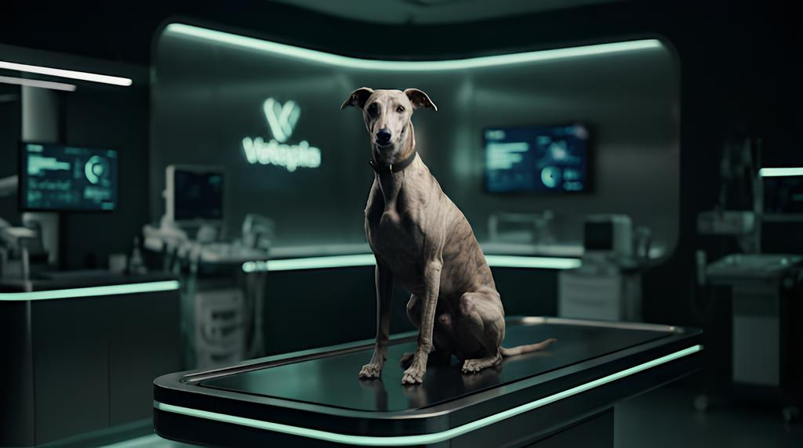

PRECISIÓN EN EL
CUIDADO ANIMAL
El futuro de la medicina veterinaria ha llegado. Diagnósticos avanzados, atención personalizada y tecnología de vanguardia para quienes más quieres.
QUÉ HACEMOS
local_hospital
Hospitalización
Monitoreo constante 24/7 en instalaciones de última generación diseñadas para la recuperación óptima y el confort absoluto.
biotech
Tratamientos Personalizados
Planes de salud basados en perfiles genéticos y biométricos precisos, asegurando la intervención más efectiva posible.
monitor_heart
Monitoreo en Tiempo Real
Acceso instantáneo a los signos vitales y progreso de tu mascota a través de nuestra plataforma digital integrada.
CÓMO FUNCIONA
01
Registro
Ingreso digital ágil y perfilado biométrico inicial.
02
Diagnóstico
Escaneo integral y análisis de laboratorio in situ.
03
Tratamiento
Ejecución del protocolo médico personalizado.
04
Recuperación
Monitoreo continuo y seguimiento post-operatorio.